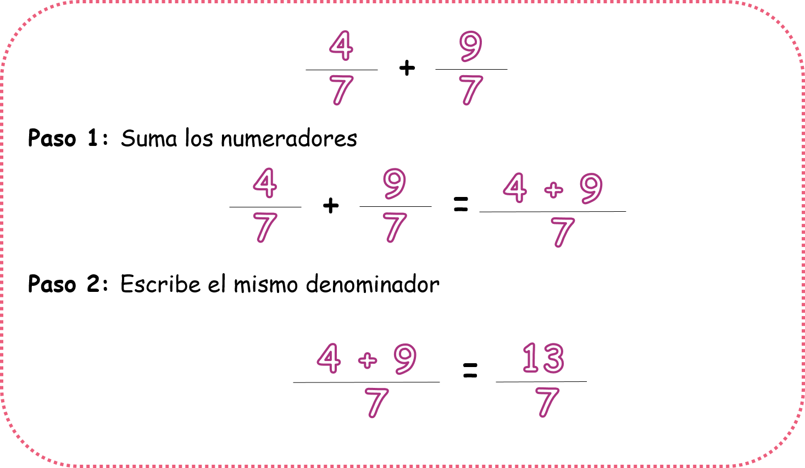

Suma y resta de fracciones con igual denominador
En este capítulo vas a usar la suma, la resta, la multiplicación y la división
¿Qué es la suma y la resta de fracciones homogéneas y para qué nos sirven?
La suma y la resta de fracciones con igual denominador es uno de los temas más sencillos de trabajar cuando de fracciones se trata. Saber hacerlo te ayudará a solucionar situaciones como estas:
Para resolver el problema de Lucas tendríamos que realizar una suma de fracciones con igual denominador, observa que en la pregunta nos están hablando del total y esta palabra nos indica adición.
Para resolver el problema de Tom debemos realizar una resta de fracciones con igual denominador, observa que en la pregunta nos hablan de la diferencia entre una cantidad y otra, esto nos indica una sustracción.
- ¿Qué vamos a aprender?
- Suma de fracciones con igual denominador
- Resta de fracciones con igual denominador
(1)Suma de fracciones con igual denominador:
Para sumar fracciones con igual denominador solo tienes que seguir estos dos pasos:
Cuando estás trabajando con suma de fracciones con igual denominador también puedes encontrarte con que debas resolver situaciones problema, para esto vamos a recordar las palabras claves que nos indican que se trata de una situación problema de suma y no de otra operación.
Observa un ejemplo de una situación problema con suma:
Para solucionar este problema debemos primero leerlo con atención, escribir los datos que nos ofrece y buscar las palabras claves que nos guíen hacia la operación que lo resuelve.
Observa:
Luego de tener los datos claros, observa que en la pregunta está resaltada la palabra “en total” que nos refiere a la suma de varias cantidades. Ahora solo tienes que sumar las partes que cada amigo de Ana comió de la tarta.
Y listo! ya resolvimos un problema. Siete décimos comieron los amigos de Ana de la tarta que les hizo su mamá.
(2)Resta de fracciones con igual denominador:
Para restar fracciones con igual denominador solo tienes que seguir estos dos pasos:
Cuando estés trabajando con restas de fracciones con igual denominador es posible que te encuentres con situaciones problema, para esto es importante que recordemos las palabras claves que podemos encontrar en la situación problema y que nos dan las pistas de que la situación se resuelve con una resta.
Observa:
Observa un ejemplo de una situación problema con resta:
Para solucionar este problema debemos primero leerlo con atención, escribir los datos que nos ofrece y buscar las palabras claves que nos guíen hacia la operación que lo resuelve.
Observa:
Luego de tener los datos claros, observa que en la pregunta está resaltada la palabra “le falta” que nos hace una referencia a que a una cantidad le falta algo para convertirse en otra cantidad (recuerda cuando estás restando un número con otro y piensas cuánto le falta a tal para llegar a tal). Ahora solo tienes que restar las partes que Lucy debe mezclar con las partes que ya mezcló para hallar la diferencia.
Y listo! ya resolvimos un problema de resta de fracciones homogéneas. Cinco novenos es lo que le falta a Lucy por mezclar.
Material extra para trabajar el tema de suma y resta de fracciones homogéneas:
En el siguiente enlace podrás encontrar una página en la cual practicar de forma virtual situaciones problema de suma y resta de fracciones con igual denominador creado por khanacademy.org
En el siguiente enlace podrás descargar una ficha de trabajo con ejercicios de suma y resta de fracciones homogéneas creada por Fichasparaimprimir.com
En el enlace podrás descargar un pdf con ejercicios gráficos sobre suma y resta de fracciones homogéneas creado por Actividadeseducativas.net
Vídeos orientativos:
En el vídeo “Cómo sumar y restar fracciones” de Aula 365- Los creadores encontrarás una explicación ilustrativa sobre cómo realizar restas y sumas de fracciones